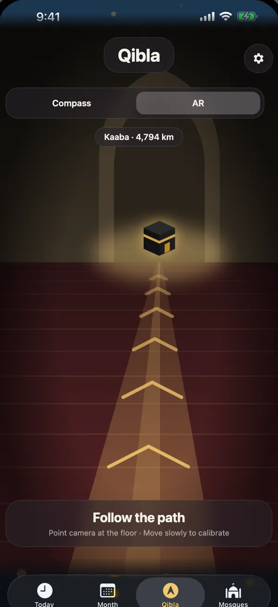

Luangkan waktu untuk salat
Jadwal salat, azan, dan Kiblat di iPhone dan Apple Watch. Jadwal salat dihitung di ponsel Anda, jadi tetap berfungsi offline.



Masjid di dekat Anda
Waktu tempuh berjalan kaki, dengan mobil, dan dengan transportasi umum, lalu petunjuk arah di Peta Apple, Google Maps, atau Waze.
Hitung mundur ke salat berikutnya
Kelima waktu salat dan waktu terbit hari ini, serta sisa waktu menuju salat berikutnya.
Kiblat dengan AR
Ikuti jalur di lantai menuju Kakbah, atau gunakan kompas.
Masjid di dekat Anda
Waktu tempuh berjalan kaki, dengan mobil, dan dengan transportasi umum, lalu petunjuk arah di Peta Apple, Google Maps, atau Waze.
Kiblat dengan AR
Ikuti jalur di lantai menuju Kakbah, atau gunakan kompas.
Penilaian rata-rata di App Store
5.0
Great app
The athan is clear and beautiful, the prayer times are accurate, and the reminders arrive right when I need them. Everything is clean and intuitive, with no clutter or confusing menus.
Hiba B. · United States
Neat design, no ads
It’s nice to hear the Athan here in Mountain View, even if it’s from my phone. I really liked the map view of nearby mosques.
Mohammad M. · United States
Excellent app
Simple, user-friendly, and very helpful for keeping track of prayer times. Highly recommended.
Hamzah A. · United States
برنامج أكثر من رائع!
أول برنامج مجاني بدون إعلانات. خلفية مريحة جدا ومواقيت صلاة دقيقة.
نور الهدى · الولايات المتحدة
Seruan untuk setiap salat
Azan tepat waktu
Pilih azan lengkap, denting, atau senyap untuk masing-masing salat.
Sebelum waktunya habis
Pengingat 5 sampai 60 menit sebelum waktu salat berakhir, agar sore yang sibuk tidak membuat Anda melewatkan Asar.
Hitung mundur di Layar Terkunci
Aktivitas Langsung menghitung mundur ke salat berikutnya di Layar Terkunci dan di Dynamic Island.
Thursday 26 November
7:30
Isha العشاء
at 7:57 PM
27:12
Maghrib ends soon3m ago
30 min left in Maghrib time. Pray if you haven’t yet.
Maghrib prayer49m ago
It’s time for Maghrib prayer.
Di pergelangan tangan Anda
Jadwal salat hari ini, kompas Kiblat, dan hitung mundur di wajah jam Anda, lewat komplikasi dan Smart Stack.

Jadwal salat hari ini
Lima waktu dan waktu terbit, dengan salat berikutnya ditandai.

Di wajah jam Anda
Salat berikutnya dan hitung mundurnya, lewat komplikasi.

Kiblat
Kompas di pergelangan tangan Anda, yang berubah hijau saat Anda menghadap Makkah.
Semua yang Anda perlukan untuk salat lima waktu
Jadwal salat offline
Jadwal salat dan Kiblat dihitung di ponsel Anda. Setelah lokasi Anda tersimpan, tidak perlu sinyal.
Sesuai jadwal masjid Anda
Metode perhitungan untuk negara Anda, mazhab Asar Syafi'i atau Hanafi, dan penyesuaian menit untuk setiap salat.
Sebulan dalam satu halaman
Jadwal salat bulanan yang dapat dibagikan atau dicetak sebagai PDF satu halaman.
Hari-hari sunah
Pengingat untuk salat Jumat, puasa Ayyamul Bidh, Senin dan Kamis, Arafah, Asyura, serta sepertiga malam terakhir.
Widget
Jadwal salat hari ini dan salat berikutnya di Layar Utama dan Layar Terkunci.
Siri dan Pintasan
Tanyakan kepada Siri kapan salat berikutnya, atau jadikan bagian dari pintasan Anda.
Tanggal Hijriah
Tampil di samping tanggal hari ini, dan dapat digeser satu atau dua hari agar sesuai dengan rukyat hilal di tempat Anda.
Dalam bahasa Anda
13 bahasa, teks lebih besar, VoiceOver, serta tampilan terang dan gelap.
Nidaa tidak tahu apa pun tentang Anda
Tanpa akun, tanpa iklan, tanpa analitik. Nidaa tidak mengumpulkan apa pun.
Baca kebijakan privasiNidaa untuk iPhone dan Apple Watch